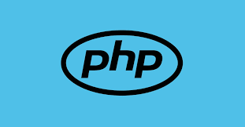

Php na utilização de aplicações web
PHP é uma linguagem de script usada para criar aplicações web dinâmicas. No contexto da qualidade de software, ela auxilia na automação de testes (usando ferramentas como PHPUnit), validação de segurança, manutenção modular e integração contínua, garantindo funcionalidade, segurança e eficiência no desenvolvimento. "